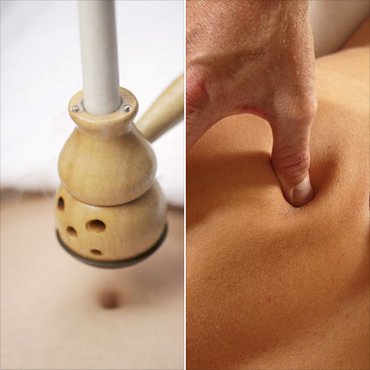

報名您喜歡的課程
★ 養生艾灸：以艾草所製作的艾條來做人體穴位的溫灸稱「艾灸」，中醫理療的非侵入性療法~ ……更多★ 按摩不僅讓身體甦醒，解開阻塞與疲勞，還能增進夫妻與親子間的關係~ ……更多

經絡按摩班：
台北班- 五月班 額滿
－
新竹班- (周六)下午2:00-4:00, 5/14 5/21 5/28 6/4

養生艾灸班：
新竹班- (周六)上午10:00-12:00, 5/14
課程簡介《經絡生活、健康快活》（4/25 更新）
★ 按摩不僅讓身體甦醒，解開阻塞與疲勞，還能增進夫妻與親子間的關係~
★ 養生艾灸：以艾草所製作的艾條來做人體穴位的溫灸稱「艾灸」，中醫理療的非侵入性療法~
養生經絡按摩 課程簡介：
按摩不僅讓身體甦醒，解開阻塞與疲勞，還能增進夫妻與親子間的關係~ 讓我們一起透過按摩讓我們為自己也為家人朋友的身體注入愛的能量。經絡生活養生經絡穴位按摩 初階班開始招生，歡迎喜愛按摩的朋友一起加入!
■ 課程介紹：
本課程將份為初、中、高三個階段來進行，將透過實際的視診與觸診來了解每一個不同案例的身體狀況，並透過理療的按摩學，來理解身體各穴位與經絡對應的器官與生理與心理狀況，再經由實際的操作練習達到身體自我保健的功效。
■ 初級課程內容：
第一堂：開手筋
第二堂：全頭部放鬆
第三堂：五十肩、蝴蝶袖
第四堂：臉部平衡+眼壓處理
■ 上課時間：
台北班- (周二)晚上6:30-8:30, 5/17 5/24 5/31 6/7
新竹班- (周六)下午2:00-4:00, 5/14 5/21 5/28 6/4
■ 上課地點：
1.台北 民生社區 2.新竹 巨城附近
■ 課程費用：四堂 8小時 共NT$2,600
養生艾灸 課程簡介：
艾灸主要是以艾草所製作的艾條來做人體穴位的溫灸稱艾灸，這是一種經常被運用在中醫理療的非侵入性療法。艾草它是一種生命力非常旺盛的藥草，更被稱為百草 之王，儒家孟子曾說：「七年之病，求三年之艾」正是在說艾草的妙用。本課程將教導從認識身體穴位，並透過正確艾灸的使用來促進身體健康，並一窺這種來自中 國老祖宗智慧的養生之道。
■ 課程內容：
1. 人體經絡穴位與養生原理
2. 艾灸的操作與實務練習
3. 艾灸的日常生活運用
■ 上課時間：
新竹場5/14(六)上午10:00-12:00
■ 上課地點：
新竹：新竹巨城旁
■ 課程費用：一堂NT$1,250
(以上費用包含講義、人體經絡圖、艾灸器具一套及艾條 市價NT$1,000)
講師簡歷
史家平
中國文化大學推廣部專業經絡師培訓認證班助理講師
心樂舞身心成長工作坊講師
中華貞宇流自然療法協會認證手級經絡師
經絡按摩理療臨床經驗七年
澳洲Griffith University 主修休閒產業管理
(講師相關資訊請見中華貞宇流自然療法協會 http://www.8dhappy.com/yellowpage/g2.htm )